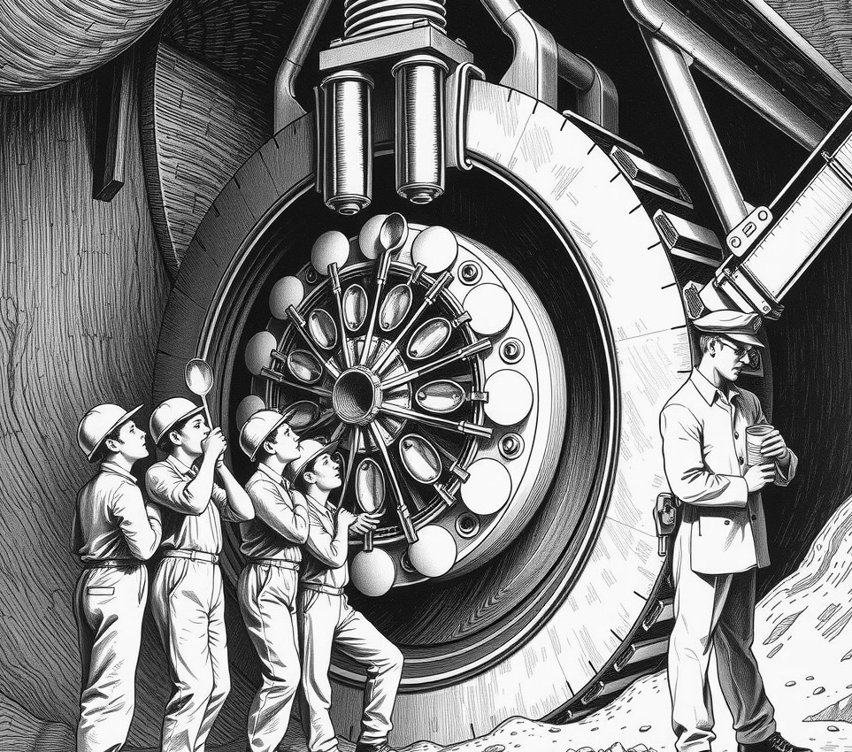

Pallas-4, Sinking-Shaft Core . 4 June 2398

PALLAS-4, SINKING-SHAFT CORE - Municipal health inspectors on Pallas-4 have designated seven industrial rock-boring excavators as unlicensed food trucks after catching local teenagers eating raw nutrient slurry directly off active tungsten drills.
The trend, known locally as bit-scraping, has spread through the asteroid's deepest tunnels. Teenagers gather at the mine face during shift changes, holding metal spoons against the spinning three-metre drill heads to scoop up warm lubricant grease and protein yeast before it drips into the dust.
Older miners have condemned the practice.
"It is pure laziness," said driller Sula Chen. "In my day, we scraped slurry off our work suits and cooked it on the engine exhaust pipes until it formed a dark crust. Eating it wet off a turning bit shows no craft."
The mining board tried to ban teenagers from the excavation zones last month. The teenagers responded by bringing bottled hot sauces and salt shaker attachments to the rock face.
On Wednesday, hygiene officers stopped clearing the shafts. Instead, they ordered shift bosses to weld napkin dispensers and hand-sanitiser bottles onto all twelve-tonne cutter frames. Excavators now require a valid catering permit before breaking rock.
Drilling has slowed. The bits keep failing their daily swab tests because of excess garlic.